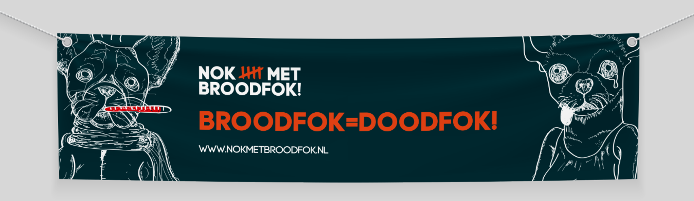

Nok met broodfok!
Ik heb de nieuwe branding voor een protestbeweging ontwikkeld, gericht op het verbeteren van de leefomstandigheden voor alle dieren. Dit heb ik gerealiseerd met een opvallend ontwerp en uitstraling, toegepast op protestmaterialen en communicatiemiddelen. Onze beweging strijdt voor het stoppen van broodfok en het bevorderen van dierenwelzijn. Met deze krachtige visuele identiteit willen we meer mensen bewust maken en activeren om mee te doen. Samen kunnen we een verschil maken voor de dieren die onze steun het hardst nodig hebben.